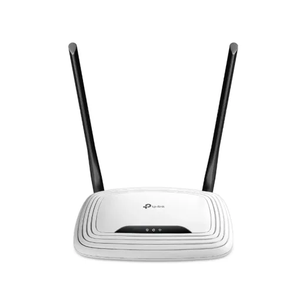
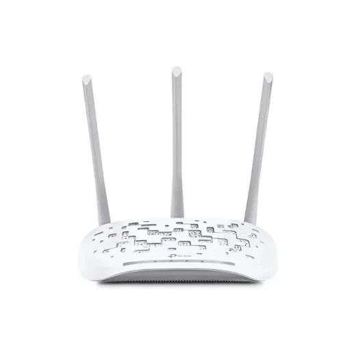

Tp-Link · Modelo TLWR841N
Router Tp-Link 300mbps Inalambrico 2.4ghz Dual Band Tl-Wr841n 2 Antenas Exter
L 645
En Acosa
Precio en cada tienda
| Tienda | Precio | Antes | Disponibilidad | |
|---|---|---|---|---|
| Acosa | L 645 | — | Disponible | Ver en tienda › |
Precios referenciales tomados de cada tienda el 28 de noviembre de 2026. El precio válido es el que muestra la tienda al comprar.
Historial de precio
Lo seguimos desde el 16 de noviembre. Precio más bajo registrado: L 609.01 en Acosa (16 de noviembre), L 35.99 menos que hoy. Cambios de precio registrados: 1.
Características
| Marca | TP-Link |
|---|---|
| Número de parte | TL-WR841N |
| Garantía | 12 Meses |
Descripción
Router inalámbrico N a 300 Mbps
• Rendimiento: velocidad inalámbrica de 300 Mbps ideal para aplicaciones sensibles a las interrupciones, como la transmisión de video HD
• Red de invitados: proporciona acceso independiente para invitados mientras protege la red doméstica
• IPv6: compatible con IPv6 (Protocolo de Internet versión 6)
• Botón WPS: cifrado de seguridad inalámbrico fácil con solo presionar el botón WPS
• IPTV: admite IGMP Proxy / Snooping, Bridge y Tag VLAN para optimizar la transmisión de IPTV
• Control de ancho de banda: asigna sus dispositivos preferidos con más ancho de banda
• Controles parentales: administre cuándo y cómo los dispositivos conectados pueden acceder a Internet
Otros routers y redes Tp-Link
 Switch 8 Puertos 10/100/1000 Mbps Tp-Link Para Escritorio Ls1008GL 645En Acosa
Switch 8 Puertos 10/100/1000 Mbps Tp-Link Para Escritorio Ls1008GL 645En Acosa Switch 8 Puertos 10/100/1000 Mbps Tp-Link P/Escritorio Tl-Sg1008dL 709En Acosa
Switch 8 Puertos 10/100/1000 Mbps Tp-Link P/Escritorio Tl-Sg1008dL 709En Acosa Repetidor Tp-Link 300mbps 2.4ghz D/Pared Access Point Tl-Wa850re 2 Antenas InterL 545En 2 tiendas · más barato en Acosa
Repetidor Tp-Link 300mbps 2.4ghz D/Pared Access Point Tl-Wa850re 2 Antenas InterL 545En 2 tiendas · más barato en Acosa Switch 5 Puertos 10/100/1000 Mbps Gigabit Tp-Link Para Escritorio Ls1005GL 445En Acosa
Switch 5 Puertos 10/100/1000 Mbps Gigabit Tp-Link Para Escritorio Ls1005GL 445En Acosa
Access Point Tp-Link 450Mbps 2.4Ghz Tl-Wa901NL 866.61En Acosa Switch 16 Puertos 10/100 Mbps Tp-Link De Escritorio Tl-Sf1016DL 869En Acosa
Switch 16 Puertos 10/100 Mbps Tp-Link De Escritorio Tl-Sf1016DL 869En Acosa Router Tp-Link 750Mbps Inalambrico 5Ghz Ac750 Dual BandL 869En Acosa
Router Tp-Link 750Mbps Inalambrico 5Ghz Ac750 Dual BandL 869En Acosa Switch 5 Puertos 10/100/1000 Mbps Tp-Link P/Escritorio Tl-Sg1005dL 405En Acosa
Switch 5 Puertos 10/100/1000 Mbps Tp-Link P/Escritorio Tl-Sg1005dL 405En Acosa